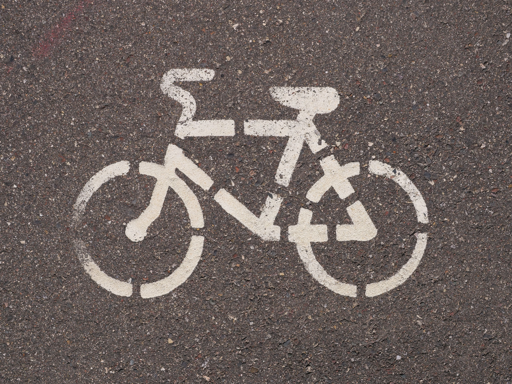
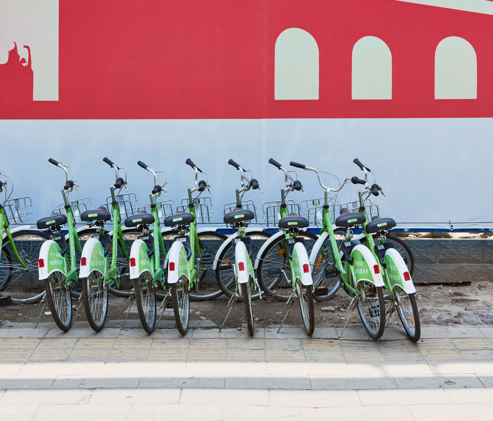
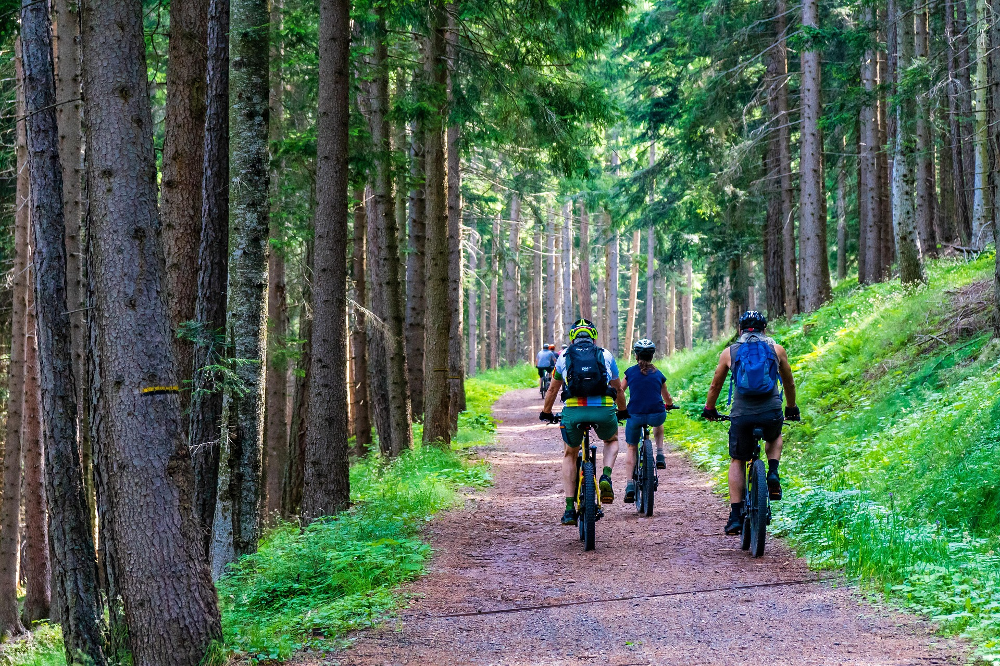

¡Bienvenido a Rueda Libre! no solo encontraras bicicletas si no también experiencias que cambian vidas.
Somos un emprendimiento de Medellín que alquila bicicletas y organiza recorridos guiados por la ciudad. Nacimos de la idea de que pedalear es la mejor forma de descubrir la ciudad, y por eso ponemos a tu disposición bicis en buen estado. Ven a conocernos y descubre por qué alquilar no tiene por qué ser incómodo.
Ideal para moverte por la ciudad un fin de semana. Incluye casco y candado. Devolución flexible hasta las 6 p.m.
Perfecto si vas a estar varios días por Medellín. Incluye casco, candado y mapa impreso de la ciudad. El precio baja a medida que más días sumas.
Rutas por Comuna 13, El Poblado y la zona de Laureles con guía local.
Incluye casco, candado, mapa impreso de la ciudad y un refrigerio.
Salidas todos los sábados a las 8:30 a. m.
Puedes ver más detalles de los recorridos acá
Estamos en Calle 10 #XX-YY, Poblado, Medellín, a dos cuadras del Parque El Poblado.

